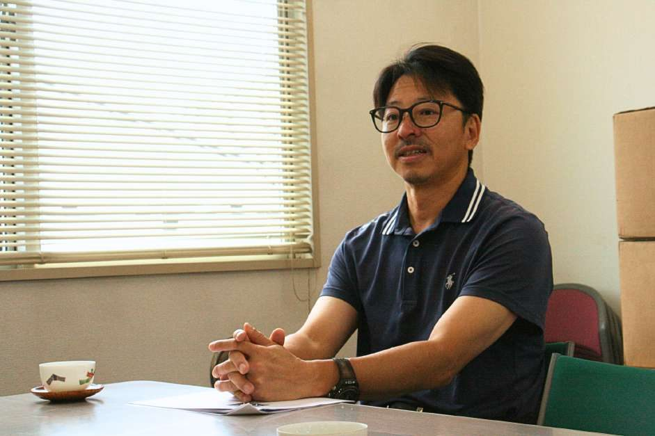
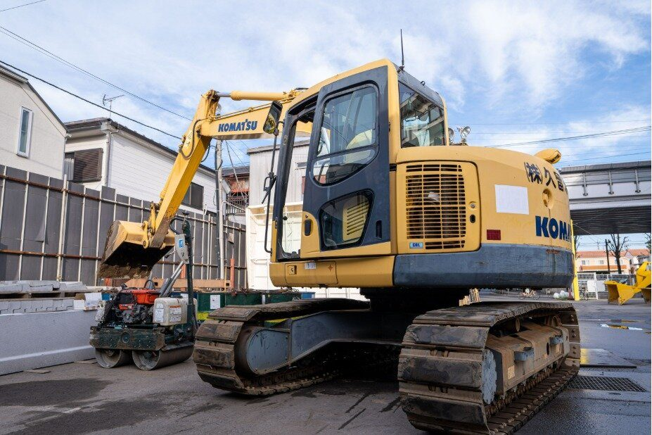

SALES
営業職｜現場と取引先をつなぐ
取引先からの工事の相談を受け、現地の状況を確認し、見積や材料・外注の手配、現場との連絡などを行います。相手の希望を聞くだけではなく、現場が無理なく作業を進められるように情報を整えることも重要な仕事です。
先輩への同行から仕事を覚え、徐々に担当できる案件を広げていきます。休日は土日祝。休みの日に現場から電話が入ることはまれにありますが、基本的には現場の責任者が対応します。
営業職の募集要項WORK ENVIRONMENT ／ 労働環境
道路や水道を支える仕事は、現場の状況や季節によって大変さも変わります。久留米興業が考える働き方、営業職と現場職の違い、仕事を続けるための取り組みをご紹介します。

代表取締役 川島 和範
OUR APPROACH 働くことへの考え方
川島代表は18歳で現場に入り、休みの少なさから「何のために働いているのか分からない」と感じて、一度会社を離れた経験があります。以前の久留米興業には、先代が残っている間はほかの社員も帰りづらい雰囲気があり、残業時間をきちんと管理する考え方も十分ではありませんでした。
今は、1日8時間の中で集中して仕事をし、やるべきことを終えたら帰る働き方を目指しています。代表が遅くまで残っていても、社長室を出ると誰もいないこともある。「それでいい」と代表は話します。仕事を緩くしたいわけではなく、家族との時間や、仕事の後にやりたいことも大切にしてほしいという考えです。
「変えられない現場の条件」と
「変えていける会社の仕組み」。
HOW WE WORK 職種ごとの働き方
久留米興業の工事は、取引先と現場の両方が動くことで進んでいきます。仕事内容は違っても、互いの状況を知り、協力して進めることが欠かせません。
取引先からの工事の相談を受け、現地の状況を確認し、見積や材料・外注の手配、現場との連絡などを行います。相手の希望を聞くだけではなく、現場が無理なく作業を進められるように情報を整えることも重要な仕事です。
先輩への同行から仕事を覚え、徐々に担当できる案件を広げていきます。休日は土日祝。休みの日に現場から電話が入ることはまれにありますが、基本的には現場の責任者が対応します。
営業職の募集要項
7〜12名程度の自社チームで、道路舗装や水道関連工事の現場作業を進めます。未経験であれば、まずは道具の名前、安全ルール、作業の流れを覚えることから。一つずつできる仕事を増やし、周囲の作業を見ながら次の工程を考える力を身につけます。
朝が早いこと、夏場は屋外で暑さと向き合うこと、月4回程度の夜勤があることも、この仕事の現実です。その日の作業はその日のうちに終わらせるため、忙しい日もあります。
現場職の募集要項| 項目 | 営業職 | 現場職 |
|---|---|---|
| 仕事内容 | 工事の相談、現地確認、見積、材料・外注の手配、現場との連絡 | |
| 主に関わる人 | 取引先、現場の社員、協力会社 | |
| 働く場所 | 事務所、取引先、工事現場 | |
| 勤務時間 | 8:00〜17:00 | 8:30〜17:30（実働7.5時間／休憩1.5時間）。早く終われば15時ごろ早上がり |
| 休日 | 土日祝（年間休日130日） | |
| 大変な部分 | まれに休日に現場から連絡が入る | |
| 身につくこと | 現場と取引先をつなぐ調整、工事の専門知識、施工管理の資格 |
HONEST TALK 大変なことと、会社の対応
仕事の大変な面と、それに対して会社が今していることを並べました。まだ十分にできていないことも、そのまま書いています。
| 大変なこと | 会社の対応・現状 |
|---|---|
| 夏の暑さの中での屋外作業（現場職） | 10時と15時に小休憩をとり、会社から冷えたドリンクを支給。お昼休憩は60分。 |
| 月4回程度の夜勤 21:00〜翌6:00（現場職） | 夜間の道路規制に合わせた工事のため。夜勤の翌日は体を休められるようにシフトを調整。 |
| 作業量が多く、休憩の余裕を感じにくい日がある（現場職） | 8人で行っていた仕事を10人で行うように人を増やしてきた。班長も「人が増えれば余裕につながる」と話しており、人員の確保を続けている。 |
| その日の作業は、その日のうちに終わらせる（現場職） | 予定より早く終わった日は、15時ごろでも無理に仕事を増やさず早上がり。日給は全額支給。 |
| 休日に現場から電話が入ることがある（営業職） | まれなケース。基本的には現場の責任者が対応する。 |
| 時期によっては残業が必要になる | 三六協定を含めた残業のルールを見直し、必要以上に長く会社に残る働き方を減らしている。 |
| 教育を専任で担当する部署がない | 経験のある社員が、日々の仕事の中で教える形。忙しい時期は十分に時間を取れないこともあり、教え方の仕組みを少しずつ整えている。 |
代表インタビュー・現場対談の内容は、掲載承認後に確定します。
A DAY AT WORK 1日の流れ
現場や担当案件によって予定は異なります。現場職は1日の流れの例、営業職は仕事の場面でご紹介します。
チームで現場へ移動して作業開始。
会社から冷えたドリンクを支給。
60分。お弁当を食べて休みます。
7〜12名の自社チームで進めます。
2回目のドリンク支給。
早く終われば、そのまま早上がり。
定時退社が基本です。
現場の状況によっては、休憩を取る余裕を感じにくいほど作業量の多い日もあります。（班長の話を読む）
【要確認】営業職の1日の時刻（出社・移動・帰社）が分かれば、現場職と同じ形式で追記します。
MANGA マンガで見る
対談インタビュー（松野さん・奥居さん）の内容をもとに構成案を更新。登場人物と内容の承認が必要です。
OUR WORKPLACE 働く場所・環境
事務所、現場、移動、そして生活の場。働く場所を写真で知ると、1日のイメージが少し具体的になります。


LIFE SUPPORT
遠方から入社する方のために、鍵付きの個室寮を用意しています。各部屋に冷暖房・テレビなどの備品があります。
| 寮費 | 月3万円 |
|---|---|
| 水道光熱費 | 月5千円 |
空室や入寮条件は応募時にご確認ください。
BENEFITS 福利厚生
福利厚生は、制度の名称だけでなく、誰が・どのような条件で利用できるかも大切です。職種ごとの違いもあわせてご案内します。
昇給年1回（現場職は習熟に応じて随時）、賞与年2回。運転無事故手当 月3万円、皆勤（精勤）手当 月2万円、資格手当。退職金制度（現場職は勤続3年以上）。
現場職は、準中型〜大型自動車免許、車両系建設機械、1級・2級土木施工管理技士、各種技能講習の受験料・講習費・交通費を会社が全額負担。営業職にも資格取得支援制度があります。
社会保険完備、定期健康診断。現場では1日2回、冷えたドリンクを支給しています。
鍵付き個室寮（寮費月3万円・水道光熱費5千円）。交通費規定支給（現場職は月2万円まで）。自転車・バイク通勤OK。
営業職は土日祝・年間休日130日。現場職は第2土曜・日曜・祝日、GW・夏季・年末年始に各6〜9日程度の連休。有給休暇・慶弔休暇。
社員旅行、忘年会、暑気払い、ゴルフクラブなど。仕事とプライベートを分けたい人もいて、関わり方は人それぞれです。
OUR EFFORTS 自社の取り組み
長く続いてきたやり方を変えることには、社内から反発もありました。それでも、法令に沿い、時代に合った会社にするため、できるところから見直してきました。まだ十分にできていないこともあります。
建設業に詳しい社会保険労務士のセミナーをきっかけに、三六協定を含めた残業のルールから見直しました。時期や仕事の状況によって残業が必要なこともありますが、必要以上に長く会社に残る働き方は減らしています。
現場の作業そのものは簡単には減らせません。そこで、これまで8人で行っていた仕事を10人で行うように人を増やし、一人が無理をして「1.2」の力で動いていた状態を「1.0」に近づけてきました。
予定より早く作業が終わった日は、15時ごろでも無理に仕事を増やさず早上がり。雨で現場が早く切り上がった日も、日給は全額支給します。夜勤の翌日は体を休められるようにシフトを調整します。
ヘルメット着用の徹底、喫煙場所の制限など、安全と近隣への配慮は時代とともに変わってきました。地域の行事やバザーへの協賛のほか、現場で余ったインターロッキングブロックを「ご自由にお持ちください」と会社の前に置くこともあります。
実際に働く人の声や、具体的な仕事・募集条件もあわせてご覧ください。